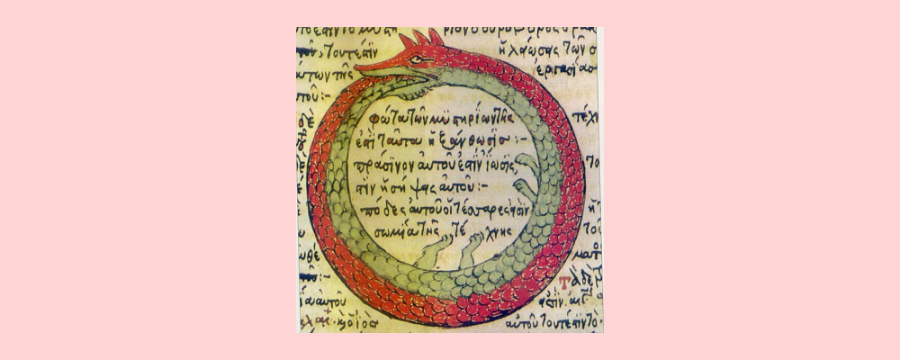

Propositional and Predicate Calculus: 2.3 Interpretation of Logical Formulas
Disclaimer: this book in particular is not in my wheelhouse. I am using these notes and reading posts to learn the material better. This post is going to be a bit sloppier and less refined than others I usually like to post.
In section 2.2 of the book, we establish how to write formulas for propositional statements like (φ ∧ ψ) or ((φ ∧ ψ) → λ).
In section 2.3, Goldrei outlines how we interpret and evaluate these propositional formulas.
For someone who has done almost any level of math or algebra, the way to evaluate propositional formulas and expressions will be quite obvious. Given the assignment of the propositional variables to true or false, it should be a mechanical process to reduce the entire propositional formula down to a single truth value. We can also use our same intuitions about how variables in algebra work to reason about how different valuations of the propositional variables would result in different evaluations of the final propositional formula.
This process of assigning meaning to the symbols in the formula is called semantics.
In 2.3, Goldrei describes the semantics of our propositional formula language from 2.2 in a variety of ways. Goldrei tells us the rules for interpreting a formula, and tells us how we can use truth tables to enumerate all the possible values a formula could evaluate to based on the values of the propositional variables that make up that formula. To me, this felt familiar from any other sort of algebra I had done before.
But what was more useful, and what allowed the chapter to provide new and interesting methods of proving ideas about the propositional system was defining those same semantics in terms of a mathematical object.
Goldrei defines the semantics of the propositional system using a function called a truth assignment which maps every propositional formula into a true or false value.
Goldrei writes this as v: FORM(P, S) → {T, F} where FORM(P, S) is the set of all formulas made from a set of propositional variables P and connectives in S.
By using a function to describe the evaluation and reasoning we do about propositional formulas, we can now prove ideas that before just seemed like obvious intuition.
For instance, in this chapter, we prove that the final value of a formula depends only on the values of the propositional variables within that formula. This is obviously true, what else would the formula depend on after all. But proving that to be true feels challenging without a mathematical object to describe how we think about the valuations of propositional formulas.
I think the first time I encountered this concept in a book on formal logic, this whole idea of using a mathematical object to describe our interpretation of a propositional formula felt very suspect to me. It felt strange to me that we would use mathematical objects to describe the objects that we use to build up mathematical reasoning in the first place. But over time, the idea has just started to feel less outlandish and just useful.
This is really the beginning of where this book and the subject matter in general really starts to get interesting. Because with a mathematical way to define semantics, we can now start to use mathematical proof techniques to prove results about this formal mathematical logic system! Wild.
